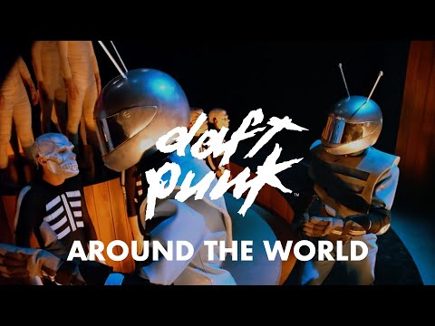
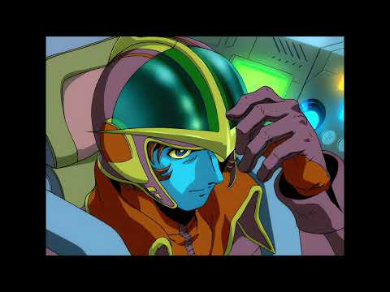
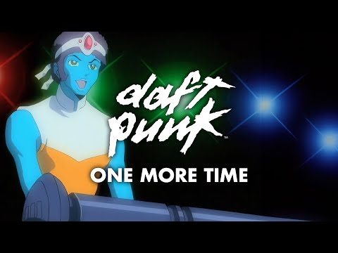
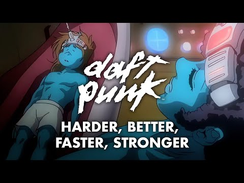
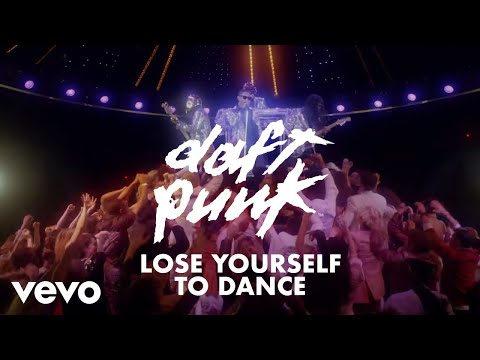

Sound in motion.

▶ WATCH THE OFFICIAL TRAILERFilm / 2003 / Discovery
Interstella 5555
The 5tory of the 5ecret 5tar 5ystem
Daft Punk’s Discovery becomes an animated science-fiction adventure in this 2003 film. An alien band is kidnapped and brought to Earth, with the story unfolding through the album’s music.
Directed by Kazuhisa Takenouchi and created with Leiji Matsumoto, the film connects the familiar Discovery videos into one continuous journey.
Trailer artwork from Daft Punk’s official YouTube channel. Film and artwork belong to their respective creators.
Memorable moments.
A few standout videos from each studio era. Choose a thumbnail to watch the official release on YouTube.
1997 / Homework
2001 / Discovery


Harder, Better, Faster, Stronger
An animated transformation set to the unmistakable vocoder hook.
WATCH ON YOUTUBE ↗2005 / Human After All
2013 / Random Access Memories

Lose Yourself to Dance
Disco lights, a crowded floor, and the band in sequined jackets.
WATCH ON YOUTUBE ↗